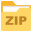

REN - Importar para o Modelo de Dados (GeoPackage)
Ajuda rápida e explicação das funcionalidades
Visão geral
Este plugin permite importar dados de tabelas .SHP .GPKG .MPK .CSV e pasta .GDB para o Modelo de Dados (GeoPackage) definido para REN. Inclui ferramentas para:
Selecionar o GeoPackage modelo (p.ex. objeto_pontoobjeto_linhaobjeto_poligono).
Adicionar camadas/tabelas de origem (shp, gpkg, mpk, csv, (pasta).GDB).
Mapear campos da origem para campos do modelo e, quando aplicável, mapear valores para códigos do catálogo.
Mapeamento automático por similaridade de textos (ajustável por rácio).
Filtrar linhas por tipo de geometria, visualizar catálogos, e guardar/carregar configurações em JSON.
Botoes:
Botão para guardar configuração num ficheiro JSON
Botão para carregar configuração do ficheiro JSON, guardado previamente
 Botão para descarregar o modelo em formato zip (ren_modelo.zip)
Botão para abrir/fechar a ajuda
Botão para verificar versões do Plugin e Modelo GPKG
Botão para abrir tabela de atributos
Botão para abrir valores da coluna
O painel lateral é onde surge a ajuda.
Abrir / Painel de Ajuda
Na barra de ferramentas da janela "principal" existe um botão Ajuda . Ao activá-lo, o painel lateral é aberto/fechado.
Ícone Ajuda: alterna o painel lateral.
Descarregar Modelo REN
Existe um botão na toolbar para guardar uma cópia do ficheiro modelo (`ren_modelo.zip`) presente na pasta do plugin. Se o ficheiro não existir, o plugin avisa através do log e da barra de mensagens do QGIS.
Configuração dados do modelo
Passos básicos:
Selecionar GeoPackage (Modelo) - Se estiver carregado nas camadas no QGIS este passo é automático (recomendado). - clicar Selecionar GeoPackage (Modelo) e escolher o ficheiro .gpkg com o modelo (destino). O plugin valida permissões de escrita e lista as tabelas esperadas.
Escolher tabela destino - escolher entre objeto_ponto, objeto_linha ou objeto_poligono conforme o tipo de geometria a importar.
DTCC - se presentes no GPKG, preenche automaticamente a opção de município (DTCC). Escolher o DTCC pretendido
Catálogo - clicar no botão Ver Catálogo (modelo) para ver o catálogo, este é dinâmico, em função da tabela no campo Tabela de destino (modelo), os valores são atualizados.
Adicionar Fontes (Dados de Origem)
O plugin suporta:
Adicionar Tabelas de Origem
.gpkg - importa todas as camadas existentes no GeoPackage selecionado.
.shp - carrega shapefiles individuais.
.mpk - procura internamente por shapefiles dentro do pacote.
.csv - carrega ficheiros como camadas de texto delimitado.
Adicionar pasta GDB
File Geodatabase (.gdb) - é possível carregar as camadas presentes na pasta.gdb.
Depois de carregadas, as tabelas de origem aparecem no menu Ver tabela(s) de origem carregada(s) onde pode ser visualizada a lista. O plugin tenta obter o sistema de coordenadas e tipo de geometria automaticamente.
Mapeamento
Há três formas de mapeamentos possiveis.
Os mapeamentos são feitos com base no campo codigo do catálogo de objetos e a coluna ou tabela de origem.
Os mapeamentos automáticos utilizam o rácio de similaridade e é ajustável (por defeito 0.7). O algoritmo usa uma comparação de sequência e regista no log o mapeamento automático efetuado.
Mapear Automaticamente (por semelhança dos nomes) - este vai tentar mapear as colunas da tabela do modelo e a coluna correspondente na tabela de origem. Ou com o nome da própria tabela de origem.
Adicionar linhas para mapeamento - usar Adicionar Linha para criar um mapeamento: Coluna do Modelo → Tabela de Origem → Coluna de Origem → (opcional) Código (substituição)Caso este seja preenchido será o valor usado na importação.
Nos casos em que a tabela já tem uma coluna com os códigos e/ou designações (categorização), a coluna Ações tem o botão Mapear.
escolher manualmente o código correspondente (lista de código na linha).
usar o botão Mapear Valores Automaticamente para fazer correspondência entre valores de origem e designações do catálogo com base num rácio de similaridade (0.0–1.0).
depois do mapeamento correcto, clicar em OK os valores serão enviados para a colunaMapeamento Valores (valor_origem:codigo). Esta correspondência será a que vai ser importadada para o modelo.
Exemplo: se o valor de origem for "Espaços Centrais" e no catálogo "Espaço Central", um rácio de 0.7 vai considerar isto uma correspondência e sugerir o código correspondente.
Dica: ao adicionar uma linha, o botão na Tabela de Origem permite abrir a tabela de atributos ; O botão na Coluna de Origem mostra os valores únicos dessa coluna (útil para preparar o mapeamento de valores) .
Filtrar por Tipo de Geometria
A tabela de mapeamento tem uma coluna Tipo de Geometria e um menu de filtro no cabeçalho que permite:
Mostrar todas as linhas.
Selecionar apenas linhas com um determinado tipo de geometria (p.ex. point / line / polygon).
As opções do filtro são atualizadas dinamicamente com base nos valores presentes na tabela de mapeamento e o estado do filtro é registado no log.
Guardar/Carregar Configuração e Executar Importação
Guardar Configuração: cria um ficheiro JSON com o mapeamento actual (inclui caminhos das fontes, mapeamentos por linha, DTCC, rácio de similaridade).
Carregar Configuração: importa um ficheiro JSON e tenta preencher a interface com as definições guardadas (avisa se a versão de configuração for diferente).
Executar Importação: quando todos os mapeamentos estiverem definidos, clicar em Executar Importação iniciará o processo de validação/importação dos elementos para o GeoPackage destino conforme o mapeamento.
Antes de executar, assegurar que o GeoPackage destino tem permissões de escrita e que está seleccionada a tabela de destino correcta.
A importação de grandes volumes de dados pode levar algum tempo.
Registo & Depuração
O plugin inclui um separador Registo (Log) onde são anexadas mensagens com data/hora. Funcionalidades:
Ver eventos, avisos e erros com data/hora.
Guardar o conteúdo do log para um ficheiro .txt (botão Guardar Log).
Mensagens informativas são também mostradas na barra de mensagens do QGIS quando apropriado.
Resolução de Problemas (FAQ)
Não encontro as tabelas no GeoPackage: assegurar que o GeoPackage está carregado no mapa ou selecciona-lo manualmente com Selecionar GeoPackage (Modelo).
Ficheiro mpk não carrega: verificar a instalação do GDAL e se o plugin tem acesso ao VFS (/vsi7z/).
Erro ao escrever no GeoPackage: confirmar permissões do ficheiro e que o ficheiro não está em utilização por outro processo.
 Botão para guardar configuração num ficheiro JSON
Botão para guardar configuração num ficheiro JSON Botão para carregar configuração do ficheiro JSON, guardado previamente
Botão para carregar configuração do ficheiro JSON, guardado previamente Botão para verificar versões do Plugin e Modelo GPKG
Botão para verificar versões do Plugin e Modelo GPKG Botão para abrir tabela de atributos
Botão para abrir tabela de atributos